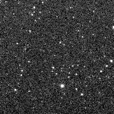

Real sample crop, simulated mover
Frame 1 of 143, 2025-05-05RA 134.410 Dec -9.024
Field 19.7′, 192×192 px
Field 19.7′, 192×192 px
5′
Esc exits. Space plays, arrows step, wheel zooms.
2025-05-05MJD 60800.70
A to B: not set6 fps